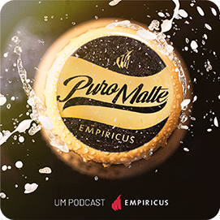

A maior conversa de bar da Faria Lima, fugindo (mas não muito) da conversa habitual sobre investimentos.
Todas as semanas no seu player de podcasts preferido:
EMPIRICUS PURO MALTE
EMPIRICUS PURO MALTE
Ouça agora

Por: Felipe Miranda, Bia Nantes, Rodolfo Amstalden e Roberta Scrivano